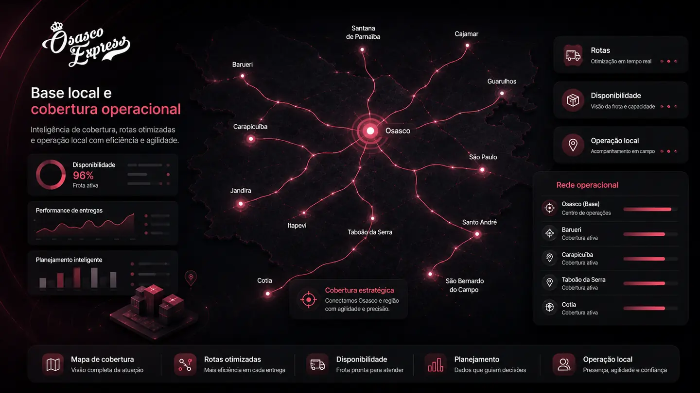
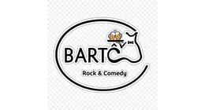
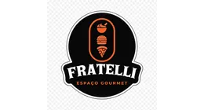
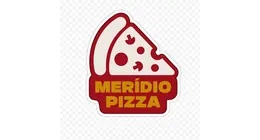

Cobertura operacional
Organização de parceiros autônomos disponíveis conforme demanda, região, horário e viabilidade.

Operação de entregas para empresas em Osasco e região
Estruturamos operações de entrega para restaurantes, transportadoras, e-commerces, marketplaces, farmácias, clínicas, comércios e empresas locais que precisam de mais previsibilidade, suporte humano e capacidade operacional.
Combinamos diagnóstico gratuito, base ativa com dezenas de parceiros autônomos locais, agenda digital de disponibilidade, sistema de despacho, suporte humano e acompanhamento operacional para indicar o modelo mais adequado para cada demanda.
Analisamos volume, horários, região, canais de venda, raio de entrega e necessidade de cobertura antes de propor um modelo operacional.
O problema que a operação sente
Quando a operação cresce, a entrega passa a exigir mais do que contatos avulsos. É preciso organizar disponibilidade, cobertura, comunicação, despacho, acompanhamento e continuidade.
Quero entender minha operaçãoOrganização de parceiros autônomos disponíveis conforme demanda, região, horário e viabilidade.
Apoio ao fluxo entre pedido, preparo, separação, expedição e entrega.
Atendimento para acompanhar a operação e apoiar a comunicação quando a demanda exige resposta.
Proposta construída com base em dados operacionais, evitando decisões baseadas só em urgência.
Venda direta e experiência
Para negócios que vendem direto pelo WhatsApp, telefone, balcão, site próprio ou cardápio digital, a experiência de entrega influencia recompra, margem e relacionamento com o cliente.
Também podemos apoiar pedidos vindos de plataformas, quando fizer sentido dentro do fluxo combinado com cada cliente.
Comece com dados
O diagnóstico gratuito considera relatórios dos últimos 60 dias ou as informações operacionais disponíveis: volume, horários de maior demanda, região, raio, tipo de entrega, canais de venda e necessidade de cobertura.
Estrutura operacional
A Osasco Express não atua apenas no acionamento de entregadores. A operação combina busca ativa de parceiros autônomos, organização de disponibilidade, tecnologia própria, suporte humano e acompanhamento.
Base local em movimento, cadastro, validação de informações e orientação operacional.
Parceiros podem informar e confirmar disponibilidade de dias e horários para apoiar o planejamento.
A operação considera preparo, separação, prioridade, proximidade, fila ou lógica combinada.
Suporte para comunicação, ajustes de rotina e alinhamento durante o modelo combinado.
Informações organizadas ajudam o cliente a acompanhar rotina e custo operacional.
Alinhamento inicial de canais, regras, ponto de coleta e forma de acionamento.
Soluções por segmento
Cada operação tem uma rotina. Primeiro entendemos a demanda; depois indicamos o modelo possível, sem promessa genérica.
Ver serviçosTecnologia sem perder o contato humano
A agenda digital apoia a organização de disponibilidade de parceiros autônomos, dias, horários e oportunidades operacionais. Mas entrega continua exigindo acompanhamento humano, comunicação clara e ajuste conforme a rotina do cliente.
Organização de disponibilidade, reservas e oportunidades operacionais.
Comunicação por ponto de coleta para manter cada assunto no lugar certo.
Canal para dúvidas sobre cadastro, app, agenda e reabertura.
Diagnóstico e contratação não se misturam com suporte operacional.
Base local
Atuamos com leitura prática da cidade, dos bairros, horários, acessos e polos comerciais. Também avaliamos demandas em Carapicuíba, Barueri, Jandira, Zona Oeste e regiões próximas, conforme rota, horário, volume e viabilidade operacional.
Operações reais
Restaurantes, pizzarias, pastelarias, mercados, bares, espaços gourmet, empresas e operações locais já utilizaram a estrutura da Osasco Express para organizar entregas, cobertura, suporte e rotina operacional.
Cada operação pode ter modelo, período, necessidade e formato diferentes. A proposta sempre depende do diagnóstico e da viabilidade operacional.



Perguntas frequentes
Respostas rápidas para o cliente entender o modelo antes de chamar o comercial.
Ver todas as perguntasNão. Estruturamos operações de entrega com diagnóstico, base de parceiros autônomos, agenda digital, suporte humano e acompanhamento operacional.
Não. A atuação é feita com parceiros autônomos, sem vínculo empregatício, exclusividade, jornada obrigatória ou garantia de escala.
Avaliamos relatórios ou informações operacionais como volume, horários, região, canais, tempo de preparo e necessidade de cobertura.
Sim, quando fizer sentido dentro do fluxo combinado, junto de canais diretos como WhatsApp, telefone, balcão e cardápio digital.
Diagnóstico gratuito
Preencha as informações principais. A equipe comercial avalia volume, cidade, canais de venda, horários e necessidade de cobertura para indicar um modelo mais responsável.
O diagnóstico inicial não garante cobertura automática. Ele organiza o primeiro atendimento e evita promessa genérica.
Próximo passo
Solicite um diagnóstico gratuito. A equipe comercial avalia sua operação antes de propor qualquer modelo.